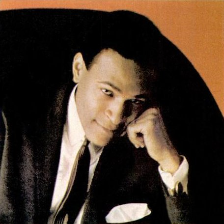

How Sweet It Is (To Be Loved by You) was Marvin Gaye's biggest record yet when Tamla released it in November 1964.
Holland-Dozier-Holland built it on a 12-bar blues shuffle and pushed Gaye up into his falsetto.
It climbed to No. 6 on the Hot 100 in January 1965, and two later covers made it a hit twice more.

Table of Contents
Who Wrote the Song?
Brian Holland, Lamont Dozier and Eddie Holland wrote it in 1964, the same year they gave the Supremes "Baby Love" and "Come See About Me."
Brian Holland and Dozier produced the session.
A Line From Jackie Gleason
Songfacts says Eddie Holland came up with the title and hook.
It credits the phrase to Jackie Gleason, who shouted "How sweet it is!" on his hit TV show.
Wikipedia marks that link as needing a citation, so take it as likely rather than proven.
Dozier wrote the words as a daydream about a woman who never noticed him, Songfacts reports.
"So I created this fantasy world where I was the object of all her affections," he said.
Not Your Run-of-the-Mill Blues
The music came first this time.
Dozier told a Songfacts interview it started as "a 12-bar blues - a shuffle."
Harvey Fuqua, the former Moonglows leader, heard the changes and stopped him.
"Those chords that you played were really interesting because it's the blues but not your run-of-the-mill blues," Fuqua said.
Dozier's answer: "Well, I just play what I feel."
How Was It Recorded?
Gaye recorded it at Hitsville U.S.A.'s Studio A in Detroit on July 24, 1964.
The Funk Brothers played the track, including Earl Van Dyke, bassist James Jamerson and drummer Richard "Pistol" Allen.
Robert White, Jack Ashford and Mike Terry are also credited, and the Andantes sang backup.
A Key Too High, on Purpose
The writers liked to set Gaye's songs above his comfort zone.
"We would stretch it a key higher, or even half a key higher," Dozier said.
On this song, he added, Gaye "would reach into his falsetto," and made it sound better than Dozier had imagined.
AllMusic's Jason Ankeny called the result a "radiant pop confection" and singled out its rolling piano riff.
Cash Box heard "a medium-paced, rollicking chorus-backed ode" about a man on top of the world since meeting Miss Right.
How High Did It Chart?
Tamla issued the single as T-54107 in November 1964, with the ballad "Forever" on the B-side.
The Marvelettes had first cut "Forever" in 1963.
| Chart | Peak |
|---|---|
| Billboard Hot 100 (US) | 6 |
| Billboard R&B (US) | 3 |
| Cash Box Top 100 (US) | 9 |
| Official Singles Chart (UK) | 49 |
It peaked in January 1965, and Joel Whitburn's R&B chart book puts its sales above 900,000 copies.
That made it Gaye's most successful single so far, ahead of his 1963 breakthrough "Pride and Joy."
You can hear its company in our 1964 music year guide and the 1965 guide, where it peaked.
The song also named his January 1965 album, How Sweet It Is to Be Loved by You.
Gaye's later Motown hits, from the Tammi Terrell duets to "I Heard It Through the Grapevine," grew from this run.
Junior Walker and James Taylor
Motown handed the song to Junior Walker & the All Stars in 1966.
Walker's saxophone-led take reached No. 18 on the Hot 100 and matched Gaye's No. 3 on the R&B chart.
James Taylor made it a hit for a third time:
- Released June 1975 as the lead single from his album Gorilla
- Carly Simon, then his wife, sang backing vocals, and David Sanborn played saxophone
- No. 5 on the Hot 100 and No. 1 on Billboard's Adult Contemporary chart
Not everyone approved.
Critic Robert Christgau called Taylor's version a "desecration of Marvin Gaye."
The Jerry Garcia Band kept it in its live sets, and the Grateful Dead played it in 1972.
Gaye's original single, meanwhile, kept on selling for decades.
In Britain, where it stalled at No. 49, the BPI has since certified it silver for 200,000 units.
FAQ
Who sang it first, Marvin Gaye or James Taylor?
Marvin Gaye had the original, released by Tamla in November 1964.
James Taylor's cover came out in June 1975.
Who wrote the song?
Motown's Holland-Dozier-Holland team: Brian Holland, Lamont Dozier and Eddie Holland.
Where does the title come from?
Songfacts traces it to Jackie Gleason's TV catchphrase, "How sweet it is!"
Wikipedia flags that link as uncited, so treat it as likely rather than proven.
How high did Marvin Gaye's version chart?
No. 6 on the Billboard Hot 100 in January 1965 and No. 3 R&B.
In the UK it reached No. 49.
Our Marvin Gaye biography follows his whole Motown decade, and the Motown and soul guide covers the label behind him.
The Billboard chart archive lists every Gaye hit.
Listen for that piano and the jump to falsetto, and How Sweet It Is (To Be Loved by You) still sounds like the day Gaye became a star.